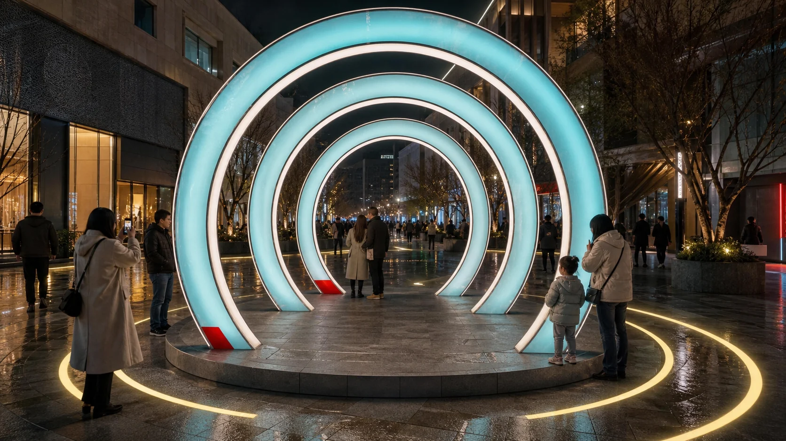
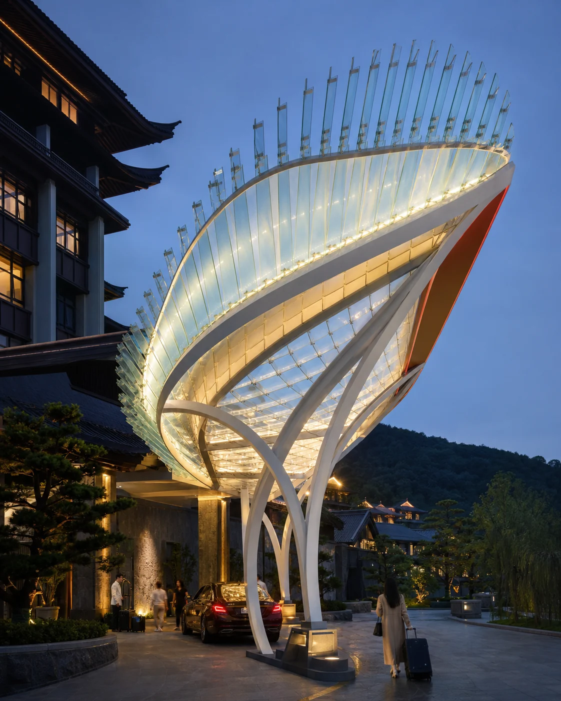
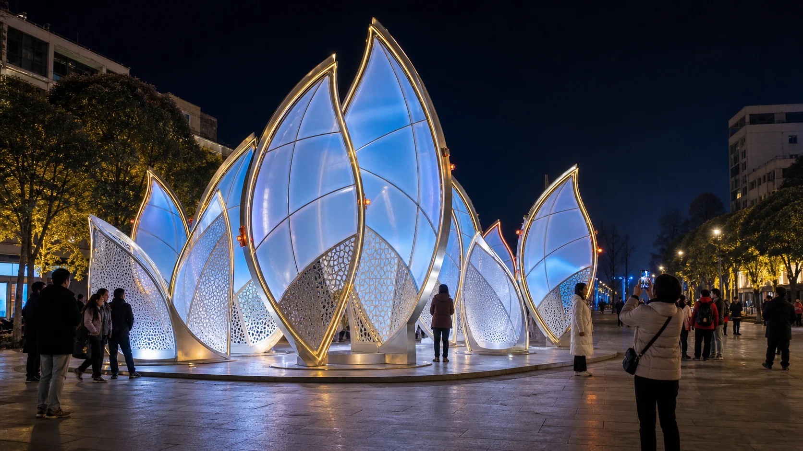

01 · SCENIC ENTRY
景区入口地标
从车行远景到游客近景建立连续识别，同时预留集散、排队、基础与设备检修位置。
ART INSTALLATIONS
为景区、商业街、古镇与酒店入口设计可建造、可拍摄、可互动、可维护的艺术装置。造型只是开始，真正的成果是停留、分享和持续使用。
游客会从哪个方向看见、在哪一面拍照、是否需要排队、夜间是否眩光、设备从哪里检修，这些问题决定装置能否长期工作。我们把视觉概念与工程条件放在同一张图里处理。
DESIGN DIRECTIONS
以下图像用于说明产品方向。正式方案会根据场地尺度、当地文化、消防净空、基础与预算重新设计，不直接复制。
从车行远景到游客近景建立连续识别，同时预留集散、排队、基础与设备检修位置。

让穿行、触发、灯光反馈和主拍照面形成完整体验，不让排队阻断商业动线。

在落客、门厅和建筑界面之间建立克制的品牌记忆，兼顾白天材质与夜间光感。

保留稳定结构与基础，通过表皮、灯光节目和局部构件更新节庆内容，降低重复建设。
FROM VIEW TO BUILD
艺术装置的设计从游客行为开始，再进入结构、材料、灯光和控制。这样可以在概念阶段提前排除无法施工、难以维护或影响通行的方向。
DELIVERABLES
交付内容根据项目阶段与责任范围确定，报价前先确认场地资料和合作边界。
文化母题、场景故事、游客视线、主效果与节点分布。
结构分段、基础条件、材料、灯具、走线与检修方式。
工厂预装、包装运输、现场拼装、灯光调试与安全复核。
节目分区、节庆更新、备品清单和日常检修建议。
START A PROJECT
请提供现场照片、平面尺寸、目标客群、开放时间、预算范围与计划落地日期。我们先判断最值得建立的节点，再进入设计。